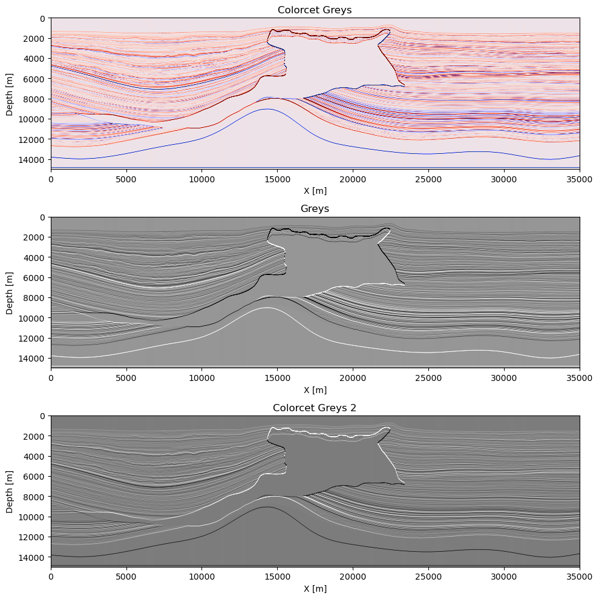

Plotting data and models with SlimPlotting
title: Overview of SlimPlotting utilities author: Mathias Louboutin date: April 2023 –-
This example script is written using Weave.jl and can be converted to different format for documentation and usage This example is converted to a markdown file for the documentation.
Import SlimPlotting, SegyIO to read seismic data, JLD2 for hdf5-like files
using SlimPlotting, SegyIO, JLD2Initialize all needed data
Close all figures if any existing
SlimPlotting.PyPlot.close(:all)Path to the files and data used for these examples
data_path = dirname(pathof(SlimPlotting))*"/../data/";Read the data
# Pure array
vp = Float32.(segy_read("$(data_path)2dVP.sgy").data);
dm = diff(vp, dims=1);
shot = Float32.(segy_read("$(data_path)2dshot.segy").data);
xloc = get_header(segy_read("$(data_path)2dshot.segy"), "GroupX")
fslice = JLD2.load("$(data_path)2dfslice.jld");Error: ArgumentError: Package JLD [4138dd39-2aa7-5051-a626-17a0bb65d9c8] is
required but does not seem to be installed:
- Run `Pkg.instantiate()` to install all recorded dependencies.
Stacktrace:
[1] _require(pkg::Base.PkgId, env::Nothing)
@ Base ./loading.jl:1739
[2] _require_prelocked(uuidkey::Base.PkgId, env::Nothing)
@ Base ./loading.jl:1625
[3] _require_prelocked
@ ./loading.jl:1623 [inlined]
[4] macro expansion
@ ./lock.jl:267 [inlined]
[5] require(uuidkey::Base.PkgId)
@ Base ./loading.jl:1620
[6] #34
@ ~/.julia/packages/FileIO/BE7iZ/src/loadsave.jl:203 [inlined]
[7] lock(f::FileIO.var"#34#35"{Base.PkgId}, l::ReentrantLock)
@ Base ./lock.jl:229
[8] action(::Symbol, ::Vector{Union{Base.PkgId, Module}}, ::FileIO.Format
ted; options::Base.Pairs{Symbol, Union{}, Tuple{}, NamedTuple{(), Tuple{}}}
)
@ FileIO ~/.julia/packages/FileIO/BE7iZ/src/loadsave.jl:203
[9] action
@ ~/.julia/packages/FileIO/BE7iZ/src/loadsave.jl:196 [inlined]
[10] action(::Symbol, ::Vector{Union{Base.PkgId, Module}}, ::Symbol, ::Str
ing; options::Base.Pairs{Symbol, Union{}, Tuple{}, NamedTuple{(), Tuple{}}}
)
@ FileIO ~/.julia/packages/FileIO/BE7iZ/src/loadsave.jl:185
[11] action
@ ~/.julia/packages/FileIO/BE7iZ/src/loadsave.jl:185 [inlined]
[12] load(::String; options::Base.Pairs{Symbol, Union{}, Tuple{}, NamedTup
le{(), Tuple{}}})
@ FileIO ~/.julia/packages/FileIO/BE7iZ/src/loadsave.jl:113
[13] load(::String)
@ FileIO ~/.julia/packages/FileIO/BE7iZ/src/loadsave.jl:109
[14] top-level scope
@ ~/work/SlimPlotting.jl/SlimPlotting.jl/examples/plot_example.jl:7Create structures to mimic JUDI-like inputs
In the future this should be instead converted into an extension rather than implicit knowledge of the structure
# Dummy structures to check plot with metadata
struct geometry
xloc
end
struct shotrec
data
dt
geometry
end
struct Phys
data
d
end
## Make physical objects
dmp = Phys(dm, (10, 20))
vpp = Phys(vp, (10, 20))
fslicep = Phys(fslice["Freq"][1, :, :], (12.5, 12.5))
shotp = shotrec([shot], 0.008, geometry([xloc]));Error: UndefVarError: `fslice` not definedModel perturbation
We plot here a model perturbation (i.e a Reverse-time Migrated image) and compare a few colormaps:
- The
seiscm.seimiccolormap - The standard matplotlib
Greyscolormap - The perceptually accurate
Greyscolormap from colorcet
figure(figsize=(10, 10))
subplot(311)
plot_simage(dmp; new_fig=false, name="Seismic")
subplot(312)
plot_simage(dm, (10, 20); cmap="Greys", new_fig=false, name="Greys")
subplot(313)
plot_simage(dm, (10, 20); cmap=:cet_CET_L1, new_fig=false, name="Colorcet Greys")
tight_layout();display(gcf())
Veclocity
We plot here a velocity model and compare a few colormaps:
- The
seiscm.frequencycolormap - The ColorSchemes
vikcolormap - The perceptually accurate
jetcolormap from colorcet namedcet_rainbow4
figure(figsize=(10, 10))
subplot(311)
plot_velocity(vpp; new_fig=false, name="colorcet jet", cmap="cet_rainbow4")
subplot(312)
plot_velocity(vp, (10, 20); cmap=:vik, new_fig=false, name="ColorSchemes's vik")
subplot(313)
plot_velocity(vp, (10, 20); cmap=seiscm(:frequency), new_fig=false, name="Seiscm")
tight_layout();display(gcf())
Frequency slice
We plot here a frequency slice for a seismic dataset and compare a few colormaps:
- The
seiscm.bwrcolormap - The standard matplotlib
bwrcolormap - The perceptually accurate
bwrcolormap from colorcet namedcet_CET_D1A
# Frequency slice
figure(figsize=(10, 5))
subplot(131)
plot_fslice(fslice["Freq"][1, :, :], (12.5, 12.5); new_fig=false, name="colorcet bwr")
subplot(132)
plot_fslice(fslicep; cmap=:bwr, new_fig=false, name="bwr")
subplot(133)
plot_fslice(fslicep; cmap=seiscm(:bwr), new_fig=false, name="Seiscm bwr")
tight_layout();display(gcf())Error: UndefVarError: `fslice` not definedShot record
Seismic blue-white-red
We plot here a frequency slice for a seismic dataset and compare a few colormaps for the bwr colormap:
- The
seiscm.bwrcolormap - The standard matplotlib
bwrcolormap - The perceptually accurate
bwrcolormap from colorcet namedcet_CET_D1A
# Shot record
figure(figsize=(10, 5))
subplot(131)
plot_sdata(shotp; new_fig=false, name="matplotlib seismic", cmap="bwr")
subplot(132)
plot_sdata(shot, (12.5, 0.008); cmap=:cet_CET_D1A, new_fig=false, name="Colorcet bwr")
subplot(133)
plot_sdata(shot, (12.5, 0.008); cmap=seiscm(:bwr), new_fig=false, name="Seismic bwr")
tight_layout();display(gcf())Error: UndefVarError: `shotp` not definedSeismic greys
We plot here a frequency slice for a seismic dataset and compare a few colormaps for the greys colormap:
- The standard matplotlib
graycolormap - The perceptually accurate
greyscolormap from colorcet namedcet_CET_L1
# Shot record
figure(figsize=(10, 5))
subplot(121)
plot_sdata(shotp; new_fig=false, name="colorcet gray", cmap="cet_CET_L1")
subplot(122)
plot_sdata(shot, (12.5, 0.008); cmap="gray", new_fig=false, name="Greys")
tight_layout();display(gcf())Error: UndefVarError: `shotp` not definedWiggle traces
We finally show the traditional wiggle plot for a shot record used in seismic.
# Wiggle plot
figure(figsize=(5, 5))
wiggle_plot(shot[1:5:end, 1:10:end], xloc[1:10:end], 0:0.02:4.6; new_fig=false)
tight_layout();display(gcf())